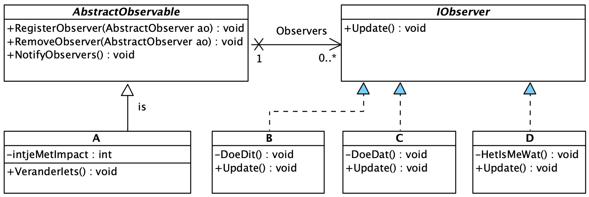

Observer Pattern
Probleemstelling
Wanneer het wijzigen van de toestand (state) van een bepaald object impact heeft op 1-of-meer andere objecten, zouden we al snel een ontwerp uitzetten waarin er een expliciete associatie bestaat tussen deze object types (klassen).
Wanneer de relevante state wijziging gebeurt, zal logica in A veranderingen in B doorvoeren.
Stel je voor dat de geïmpacteerde objecten daarenboven van verschillende types kunnen zijn. Nu moeten we in A expliciete lijsten van verschillende types beheren en de relevante methodes aanroepen bij state changes.
public class A
{
private int intjeMetImpact = -1;
private List<B> DeBeetjes = new();
private List<C> DeCeetjes = new();
private List<D> DeDeetjes = new();
public void VeranderIets()
{
intjeMetImpact++;
foreach(var b in DeBeetjes)
b.DoeDit();
foreach(var c in DeCeetjes)
c.DoeDat();
foreach(var c in DeCeetjes)
b.HetIsMeWat();
}
}Dit werkt. De computer zal niet klagen, maar een developer wel. De oplossing is niet schaalbaar. Er is tight coupling tussen A en B,C,D. We hebben een elegantere oplossing nodig met loose coupling waar A zoveel niet hoeft te weten over de geïmpacteerde objecten.
Observer Pattern
In plaats van de afhankelijkheden expliciet te hardcoden, kunnen we het geheel abstracter implementeren.
We kunnen stellen dat er iets is, een onderwerp (subject), namelijk A. Andere types B, C, D moeten reageren op toestandsveranderingen van A. De types die interesse hebben in de toestandsverandering zullen we observers noemen. We kunnen dus ook stellen dat A observable moet zijn.
Dit paradigma kunnen we vastleggen aan de hand van abstracte klassen.
UML

Nu is er sprake van loose coupling.
-
Er is geen concrete associatie tussen de types
AenA,B,C. -
De interne keuken van
A,B,Cisprivate.
C# Abstractie
public abstract class AbstractObserver
{
public abstract void Update(); (1)
}| 1 | Een klasse die erft van AbstractObserver zal Update() moeten implementeren.Wat die methode concreet zal doen, kan (en zal) verschillen voor A, B, C etc. |
public abstract class AbstractObservable
{
private List<AbstractObserver> _observers = []; (1)
public void RegisterObserver(AbstractObserver observer) (1)
{
_observers.Add(observer);
}
public void RemoveObserver(AbstractObserver observer) (1)
{
_observers.Remove(observer);
}
public void NotifyObservers() (2)
{
foreach (var observer in _observers)
{
observer.Update();
}
}
}| 1 | Een Observable kent een lijst van observeerders en bevat de nodige logica om deze lijst te managen. |
| 2 | Wanneer de toestand van het subject (= de observable) verandert, zal deze alle _observers verwittigen aan de hand van de Update() methode. |
C# Implementatie
De klasse A wordt niet langer "vervuild" door referenties naar instanties van geïnteresseerde objecten.
public class A : AbstractObservable
{
private int intjeMetImpact = -1;
public void VeranderIets()
{
intjeMetImpact++;
NotifyObservers();
}
}De klassen B, C en D hoeven hun interne keuken ook niet langer de exposen. De hook naar het observer-observable verhaal zit in de abstracte base class.
public class B : AbstractObserver
{
public override void Update()
{
DoeDit();
}
private void DoeDit()
{
// interne keuken
}
}public class C : AbstractObserver
{
public override void Update()
{
DoeDat();
}
private void DoeDat()
{
// interne keuken
}
}public class D : AbstractObserver
{
public override void Update()
{
HetIsMeWat();
}
private void HetIsMeWat()
{
// interne keuken
}
}Relatie Beheren
De relatie tussen observer en observable moet extern beheerd worden.
var a = new A();
var b = new B();
var c = new C();
var c2 = new C();
var d = new D();
a.AddObserver(b);
a.AddObserver(c);
a.AddObserver(c);
a.AddObserver(d);
// ...
a.RemoveObserver(c);
// ...Je kan een specifieke klasse in het leven roepen om dit te beheren, of het gewoon deel laten uitmaken van andere applicatielogica. Dat is sterk afhankelijk van het grotere geheel.
Bestaande Implementaties
-
Microsoft voorziet een opinionated implementatie.
-
UI broncode zal vaak steunen op het observer pattern voor het synchroniseren van databound elementen in, bijvoorbeeld, MVVM context.
Commands & Events
Door het observer pattern toe te passen kunnen we het conceptuele verschil tussen instructies (commands) en meldingen (events) introduceren.
De originele A besliste expliciet om b.DoeDit() aan te roepen. "Jij moet nu dit doen"_.
De nieuwe A zegt tegen de observers (ongeacht het concrete type) "Weet dat ik geüpdatet ben - just saying".
Service Bus
Vaak kan je een conceptueel idee toepassen op geschaald niveau, van micro tot macro. Wanneer we de macro versie van het Observer patroon bekijken, landen we bij een service bus, zoals bijvoorbeeld Azure Service Bus.
Een service bus is een infrastructuurcomponent in softwarearchitectuur die communicatie tussen verschillende applicaties en diensten faciliteert. Het fungeert als een tussenlaag die berichten verzendt en ontvangt, waardoor losse koppeling en schaalbaarheid mogelijk zijn.